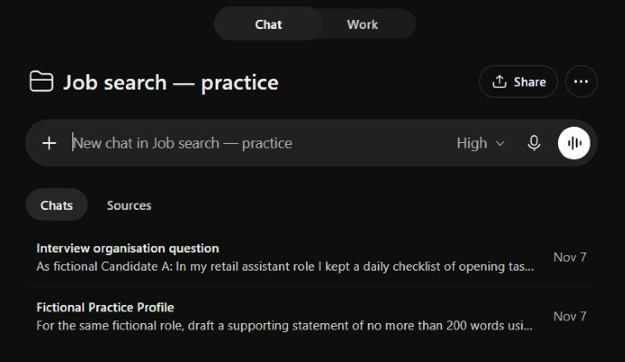

A PRACTICAL COMMUNITY GUIDE
A little AI help.
A more organised
job search.
From making sense of a job advert to practising an interview. Learn how to keep it all together in a ChatGPT Project — one manageable step at a time.
My job search
One Project. A few focused chats.
“Updated a stock spreadsheet”
“Kept stock information up to date using an existing spreadsheet template.”
Clearer wording. The same real experience.You bring the experience. AI helps you organise and explain it. You check the facts and decide what to send.
A PLACE TO BEGIN
Take the next useful step.
Follow the walkthrough from start to finish,
or dip into what you need today.
Try the full walkthrough
Meet Candidate A, compare a fictional role and work through a practice application.
Set up your Project
Copy instructions that ask for plain English, honest claims and manageable steps.
Find a prompt for the task
CV edits, supporting statements, recruiter replies and interview practice.
Keep personal details private
What to leave out of uploads, shared chats and public screenshots.
Set up a daily Job Sweep
Choose your filters, try a search and schedule a shortlist to review.

THE PRACTICE PROJECT · 7 NOVEMBER 2026TRIED WITH A FICTIONAL CANDIDATE
See what it
looks like.
We worked through the exercises in ChatGPT and captured the results. The useful bits — and the suggestions that needed a closer look — are part of the guide.
Take a look inside the demo →Before you try it
Start with the fictional example. Don’t upload your real CV just to see how it works.
AI can make convincing mistakes. Check every skill, qualification, date and employer detail. This guide is a learning resource, not a recruitment service or a promise of employment.
A quick privacy check →WHITEHOUSE AI CIRCLE
Useful knowledge.
Shared between neighbours.
We’re a local community exploring positive, practical uses of AI in everyday life, work and learning. You don’t need to be technical to take part — just curious.
Project background: official OpenAI Projects guide ↗
Checked 7 November 2026. Menus and features may change.